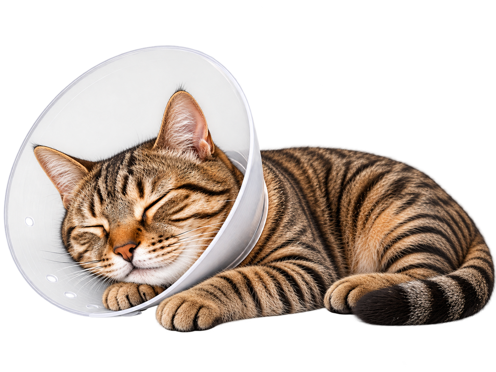

El procedimiento
Conoce cómo es el proceso paso a paso.
1
Consulta y evaluación
Revisamos la salud de tu gato para confirmar que está listo para el procedimiento.
2
Preparación prequirúrgica
Se realiza ayuno y preparación necesaria para una cirugía segura.
3
Cirugía segura
El procedimiento se realiza bajo anestesia y con técnicas seguras y modernas.
4
Recuperación y cuidados
Tu gato permanece en observación y te indicamos los cuidados en casa.


Todo el proceso es realizado por profesionales
que velan por su bienestar.